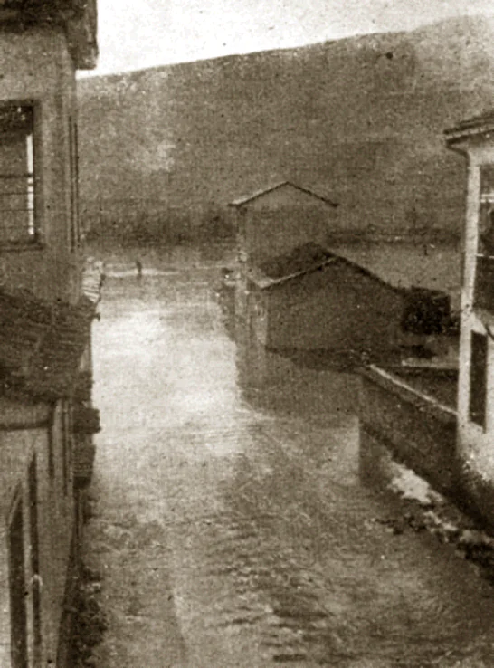

Πλημμύρα 1962 - 1
- Σενάριο και σκηνοθεσία
- Τράιτσε Πόποφ και Μπράνκο Γκάπο
- Οπερατέρ
- Μπράνκο Μιχαϊλόφσκι και Ντούσαν Γκάγιτς
- Έτος
- 1963
- Διάρκεια
- 00:16

Η πλημμύρα της εβραϊκής συνοικίας το 1895. Φωτογραφία από την Πέτρινη γέφυρα προς το τουρκικό θέατρο. Στο βάθος, πάνω, φαίνεται το φρούριο των Σκοπίων - Καλέ.

Η πλημμύρα του 1895.

Η πλημμύρα του 1895.

Η πλημμύρα του 1897.

Η πλημμύρα του 1916.

Η πλημμύρα του Μαΐου 1916. Θέα του Βαρδάρη κοντά στο ξύλινο γεφυράκι. Δεξιά φαίνεται το καφενείο «Μπόγκες», όπου γίνονταν οι πρώτες θεατρικές παραστάσεις. Στο βάθος, πάνω, φαίνεται το φρούριο των Σκοπίων - Καλέ.

Η πλημμύρα του Μαΐου 1916. Ο κεντρικός δρόμος μπροστά στην καθολική εκκλησία.

Η πλημμύρα του Μαΐου 1916, στην προκυμαία 13 Νοεμβρίου, ακριβώς δίπλα στην Πέτρινη γέφυρα, στην αριστερή όχθη του Βαρδάρη. Στο βάθος φαίνεται το Τζαμί Μπουρμαλί.

Η πλημμύρα - 1962. Ο κεντρικός δρόμος μέχρι την πλατεία.


 Υδραγωγείο4 καρτ-ποστάλ
Υδραγωγείο4 καρτ-ποστάλ Καλέ30 καρτ-ποστάλ
Καλέ30 καρτ-ποστάλ Γέφυρες60 καρτ-ποστάλ
Γέφυρες60 καρτ-ποστάλ Προκυμαία58 καρτ-ποστάλ
Προκυμαία58 καρτ-ποστάλ Πλατεία46 καρτ-ποστάλ
Πλατεία46 καρτ-ποστάλ Κτίρια66 καρτ-ποστάλ
Κτίρια66 καρτ-ποστάλ Χριστιανικοί ναοί19 καρτ-ποστάλ
Χριστιανικοί ναοί19 καρτ-ποστάλ Μουσουλμανικά κτίρια33 καρτ-ποστάλ
Μουσουλμανικά κτίρια33 καρτ-ποστάλ Λέσχη Αξιωματικών29 καρτ-ποστάλ
Λέσχη Αξιωματικών29 καρτ-ποστάλ Θέατρο28 καρτ-ποστάλ
Θέατρο28 καρτ-ποστάλ Σιδηροδρομικός σταθμός13 καρτ-ποστάλ
Σιδηροδρομικός σταθμός13 καρτ-ποστάλ Σχολεία36 καρτ-ποστάλ
Σχολεία36 καρτ-ποστάλ Πάρκα12 καρτ-ποστάλ
Πάρκα12 καρτ-ποστάλ Αγορές18 καρτ-ποστάλ
Αγορές18 καρτ-ποστάλ Δρόμοι38 καρτ-ποστάλ
Δρόμοι38 καρτ-ποστάλ Πανόραμα I60 καρτ-ποστάλ
Πανόραμα I60 καρτ-ποστάλ Πανόραμα II30 καρτ-ποστάλ
Πανόραμα II30 καρτ-ποστάλ Κολάζ55 καρτ-ποστάλ
Κολάζ55 καρτ-ποστάλ Πλημμύρες9 καρτ-ποστάλ
Πλημμύρες9 καρτ-ποστάλ Σεισμός27 καρτ-ποστάλ
Σεισμός27 καρτ-ποστάλ Σκόπια 200026 καρτ-ποστάλ
Σκόπια 200026 καρτ-ποστάλ